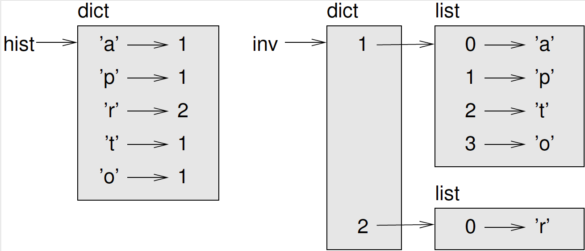

Dictionaries¶
This chapter presents another built-in type called a dictionary. Dictionaries are one of Python’s best features; they are the building blocks of many efficient and elegant algorithms.
A dictionary is a mapping¶
A dictionary is like a list, but more general. In a list, the indices have to be integers; in a dictionary they can be (almost) any type.
A dictionary contains a collection of indices, which are called keys, and a collection of values. Each key is associated with a single value. The association of a key and a value is called a key-value pair or sometimes an item.
In mathematical language, a dictionary represents a mapping from keys to values, so you can also say that each key “maps to” a value. As an example, we’ll build a dictionary that maps from English to Spanish words, so the keys and the values are all strings.
The function dict creates a new dictionary with no items.
Because dict is the name of a built-in function, you
should avoid using it as a variable name.
>>> eng2sp = dict()
>>> eng2sp
{}
The squiggly-brackets, {}, represent an empty dictionary. To add items
to the dictionary, you can use square brackets:
>>> eng2sp['one'] = 'uno'
This line creates an item that maps from the key 'one' to the value
'uno'. If we print the dictionary again, we see a key-value pair with
a colon between the key and value:
>>> eng2sp
{'one': 'uno'}
This output format is also an input format. For example, you can create a new dictionary with three items:
>>> eng2sp = {'one': 'uno', 'two': 'dos', 'three': 'tres'}
But if you print eng2sp, you might be surprised:
>>> eng2sp
{'one': 'uno', 'three': 'tres', 'two': 'dos'}
The order of the key-value pairs might not be the same. If you type the same example on your computer, you might get a different result. In general, the order of items in a dictionary is unpredictable.
But that’s not a problem because the elements of a dictionary are never indexed with integer indices. Instead, you use the keys to look up the corresponding values:
>>> eng2sp['two']
'dos'
The key 'two' always maps to the value 'dos' so the order of the
items doesn’t matter.
If the key isn’t in the dictionary, you get an exception:
>>> eng2sp['four']
KeyError: 'four'
The len function works on dictionaries; it returns the
number of key-value pairs:
>>> len(eng2sp)
3
The in operator works on dictionaries, too; it tells you
whether something appears as a key in the dictionary
(appearing as a value is not good enough).
>>> 'one' in eng2sp
True
>>> 'uno' in eng2sp
False
To see whether something appears as a value in a dictionary, you can use
the method values, which returns a collection of values,
and then use the in operator:
>>> vals = eng2sp.values()
>>> 'uno' in vals
True
The in operator uses different algorithms for lists and
dictionaries. For lists, it searches the elements of the list in order,
as in Section 9.6. As the list gets longer, the search time
gets longer in direct proportion.
Python dictionaries use a data structure called a
hashtable that has a remarkable property: the
in operator takes about the same amount of time no matter
how many items are in the dictionary. I explain how that’s possible in
Section 22.4, but the explanation might not make sense
until you’ve read a few more chapters.
Dictionary as a collection of counters¶
Suppose you are given a string and you want to count how many times each letter appears. There are several ways you could do it:
You could create 26 variables, one for each letter of the alphabet. Then you could traverse the string and, for each character, increment the corresponding counter, probably using a chained conditional.
You could create a list with 26 elements. Then you could convert each character to a number (using the built-in function
ord), use the number as an index into the list, and increment the appropriate counter.You could create a dictionary with characters as keys and counters as the corresponding values. The first time you see a character, you would add an item to the dictionary. After that you would increment the value of an existing item.
Each of these options performs the same computation, but each of them implements that computation in a different way.
An implementation is a way of performing a computation; some implementations are better than others. For example, an advantage of the dictionary implementation is that we don’t have to know ahead of time which letters appear in the string and we only have to make room for the letters that do appear.
Here is what the code might look like:
def histogram(s):
d = dict()
for c in s:
if c not in d:
d[c] = 1
else:
d[c] += 1
return d
The name of the function is histogram, which is a
statistical term for a collection of counters (or frequencies).
The first line of the function creates an empty dictionary. The
for loop traverses the string. Each time through the
loop, if the character c is not in the dictionary, we
create a new item with key c and the initial value 1
(since we have seen this letter once). If c is already in
the dictionary we increment d[c].
Here’s how it works:
>>> h = histogram('brontosaurus')
>>> h
{'a': 1, 'b': 1, 'o': 2, 'n': 1, 's': 2, 'r': 2, 'u': 2, 't': 1}
The histogram indicates that the letters 'a' and 'b' appear once;
'o' appears twice, and so on.
Dictionaries have a method called get that takes a key
and a default value. If the key appears in the dictionary,
get returns the corresponding value; otherwise it returns
the default value. For example:
>>> h = histogram('a')
>>> h
{'a': 1}
>>> h.get('a', 0)
1
>>> h.get('c', 0)
0
As an exercise, use get to write histogram
more concisely. You should be able to eliminate the if
statement.
Looping and dictionaries¶
If you use a dictionary in a for statement, it traverses
the keys of the dictionary. For example, print_hist prints each key
and the corresponding value:
def print_hist(h):
for c in h:
print(c, h[c])
Here’s what the output looks like:
>>> h = histogram('parrot')
>>> print_hist(h)
a 1
p 1
r 2
t 1
o 1
Again, the keys are in no particular order. To traverse the keys in
sorted order, you can use the built-in function sorted:
>>> for key in sorted(h):
... print(key, h[key])
a 1
o 1
p 1
r 2
t 1
Reverse lookup¶
Given a dictionary d and a key k, it is
easy to find the corresponding value v = d[k]. This
operation is called a lookup.
But what if you have v and you want to find
k? You have two problems: first, there might be more than
one key that maps to the value v. Depending on the
application, you might be able to pick one, or you might have to make a
list that contains all of them. Second, there is no simple syntax to do
a reverse lookup; you have to search.
Here is a function that takes a value and returns the first key that maps to that value:
def reverse_lookup(d, v):
for k in d:
if d[k] == v:
return k
raise LookupError()
This function is yet another example of the search pattern, but it uses
a feature we haven’t seen before, raise. The
raise statement causes an exception; in this case it
causes a LookupError, which is a built-in exception used
to indicate that a lookup operation failed.
If we get to the end of the loop, that means v doesn’t
appear in the dictionary as a value, so we raise an exception.
Here is an example of a successful reverse lookup:
>>> h = histogram('parrot')
>>> key = reverse_lookup(h, 2)
>>> key
'r'
And an unsuccessful one:
>>> key = reverse_lookup(h, 3)
Traceback (most recent call last):
File "<stdin>", line 1, in <module>
File "<stdin>", line 5, in reverse_lookup
LookupError
The effect when you raise an exception is the same as when Python raises one: it prints a traceback and an error message.
When you raise an exception, you can provide a detailed error message as an optional argument. For example:
>>> raise LookupError('value does not appear in the dictionary')
Traceback (most recent call last):
File "<stdin>", line 1, in ?
LookupError: value does not appear in the dictionary
A reverse lookup is much slower than a forward lookup; if you have to do it often, or if the dictionary gets big, the performance of your program will suffer.
Dictionaries and lists¶
Lists can appear as values in a dictionary. For example, if you are given a dictionary that maps from letters to frequencies, you might want to invert it; that is, create a dictionary that maps from frequencies to letters. Since there might be several letters with the same frequency, each value in the inverted dictionary should be a list of letters.
Here is a function that inverts a dictionary:
def invert_dict(d):
inverse = dict()
for key in d:
val = d[key]
if val not in inverse:
inverse[val] = [key]
else:
inverse[val].append(key)
return inverse
Each time through the loop, key gets a key from
d and val gets the corresponding value. If
val is not in inverse, that means we
haven’t seen it before, so we create a new item and initialize it with a
singleton (a list that contains a single element).
Otherwise we have seen this value before, so we append the corresponding
key to the list.
Here is an example:
>>> hist = histogram('parrot')
>>> hist
{'a': 1, 'p': 1, 'r': 2, 't': 1, 'o': 1}
>>> inverse = invert_dict(hist)
>>> inverse
{1: ['a', 'p', 't', 'o'], 2: ['r']}

Figure 12.1 is a state diagram showing hist
and inverse. A dictionary is represented as a box with
the type dict above it and the key-value pairs inside. If
the values are integers, floats or strings, I draw them inside the box,
but I usually draw lists outside the box, just to keep the diagram
simple.
Lists can be values in a dictionary, as this example shows, but they cannot be keys. Here’s what happens if you try:
>>> t = [1, 2, 3]
>>> d = dict()
>>> d[t] = 'oops'
Traceback (most recent call last):
File "<stdin>", line 1, in ?
TypeError: list objects are unhashable
I mentioned earlier that a dictionary is implemented using a hashtable and that means that the keys have to be hashable.
A hash is a function that takes a value (of any kind) and returns an integer. Dictionaries use these integers, called hash values, to store and look up key-value pairs.
This system works fine if the keys are immutable. But if the keys are mutable, like lists, bad things happen. For example, when you create a key-value pair, Python hashes the key and stores it in the corresponding location. If you modify the key and then hash it again, it would go to a different location. In that case you might have two entries for the same key, or you might not be able to find a key. Either way, the dictionary wouldn’t work correctly.
That’s why keys have to be hashable, and why mutable types like lists aren’t. The simplest way to get around this limitation is to use tuples, which we will see in the next chapter.
Since dictionaries are mutable, they can’t be used as keys, but they can be used as values.
Memos¶
If you played with the fibonacci function from
Section 7.7, you might have noticed that the
bigger the argument you provide, the longer the function takes to run.
Furthermore, the run time increases quickly.
To understand why, consider Figure 12.2, which shows
the call graph for fibonacci with
n=4:
A call graph shows a set of function frames, with lines connecting each
frame to the frames of the functions it calls. At the top of the graph,
fibonacci with n=4 calls
fibonacci with n=3 and
n=2. In turn, fibonacci with
n=3 calls fibonacci with
n=2 and n=1. And so on.
Count how many times fibonacci(0) and
fibonacci(1) are called. This is an inefficient solution
to the problem, and it gets worse as the argument gets bigger.
One solution is to keep track of values that have already been computed
by storing them in a dictionary. A previously computed value that is
stored for later use is called a memo. Here is a
“memoized” version of fibonacci:
known = {0:0, 1:1}
def fibonacci(n):
if n in known:
return known[n]
res = fibonacci(n-1) + fibonacci(n-2)
known[n] = res
return res
known is a dictionary that keeps track of the Fibonacci
numbers we already know. It starts with two items: 0 maps to 0 and 1
maps to 1.
Whenever fibonacci is called, it checks
known. If the result is already there, it can return
immediately. Otherwise it has to compute the new value, add it to the
dictionary, and return it.
If you run this version of fibonacci and compare it with
the original, you will find that it is much faster.
Global variables¶
In the previous example, known is created outside the
function, so it belongs to the special frame called __main__.
Variables in __main__ are sometimes called global
because they can be accessed from any function. Unlike local variables,
which disappear when their function ends, global variables persist from
one function call to the next.
It is common to use global variables for flags; that
is, boolean variables that indicate (“flag”) whether a condition is
true. For example, some programs use a flag named verbose
to control the level of detail in the output:
verbose = True
def example1():
if verbose:
print('Running example1')
If you try to reassign a global variable, you might be surprised. The following example is supposed to keep track of whether the function has been called:
been_called = False
def example2():
been_called = True # WRONG
But if you run it you will see that the value of been_called doesn’t
change. The problem is that example2 creates a new local
variable named been_called. The local variable goes away when the
function ends, and has no effect on the global variable.
To reassign a global variable inside a function you have to declare the global variable before you use it:
been_called = False
def example2():
global been_called
been_called = True
The global statement tells the interpreter something
like, “In this function, when I say been_called, I mean the global
variable; don’t create a local one.”
Here’s an example that tries to update a global variable:
count = 0
def example3():
count = count + 1 # WRONG
If you run it you get:
UnboundLocalError: local variable 'count' referenced before assignment
Python assumes that count is local, and under that
assumption you are reading it before writing it. The solution, again, is
to declare count global.
def example3():
global count
count += 1
If a global variable refers to a mutable value, you can modify the value without declaring the variable:
known = {0:0, 1:1}
def example4():
known[2] = 1
So you can add, remove and replace elements of a global list or dictionary, but if you want to reassign the variable, you have to declare it:
def example5():
global known
known = dict()
Global variables can be useful, but if you have a lot of them, and you modify them frequently, they can make programs hard to debug.
Debugging¶
As you work with bigger datasets it can become unwieldy to debug by printing and checking the output by hand. Here are some suggestions for debugging large datasets:
Scale down the input:
If possible, reduce the size of the dataset. For example if the program reads a text file, start with just the first 10 lines, or with the smallest example you can find. You can either edit the files themselves, or (better) modify the program so it reads only the firstnlines.If there is an error, you can reduce
nto the smallest value that manifests the error, and then increase it gradually as you find and correct errors.Check summaries and types:
Instead of printing and checking the entire dataset, consider printing summaries of the data: for example, the number of items in a dictionary or the total of a list of numbers.A common cause of runtime errors is a value that is not the right type. For debugging this kind of error, it is often enough to print the type of a value.
Write self-checks:
Sometimes you can write code to check for errors automatically. For example, if you are computing the average of a list of numbers, you could check that the result is not greater than the largest element in the list or less than the smallest. This is called a “sanity check” because it detects results that are “insane”.Another kind of check compares the results of two different computations to see if they are consistent. This is called a “consistency check”.
Format the output:
Formatting debugging output can make it easier to spot an error. We saw an example in Section 7.9. Another tool you might find useful is thepprintmodule, which provides apprintfunction that displays built-in types in a more human-readable format (pprintstands for “pretty print”).
Again, time you spend building scaffolding can reduce the time you spend debugging.
Glossary¶
mapping:
A relationship in which each element of one set corresponds to an element of another set.dictionary:
A mapping from keys to their corresponding values.key-value pair:
The representation of the mapping from a key to a value.item:
In a dictionary, another name for a key-value pair.key:
An object that appears in a dictionary as the first part of a key-value pair.value:
An object that appears in a dictionary as the second part of a key-value pair. This is more specific than our previous use of the word “value”.implementation:
A way of performing a computation.hashtable:
The algorithm used to implement Python dictionaries.hash function:
A function used by a hashtable to compute the location for a key.hashable:
A type that has a hash function. Immutable types like integers, floats and strings are hashable; mutable types like lists and dictionaries are not.lookup:
A dictionary operation that takes a key and finds the corresponding value.reverse lookup:
A dictionary operation that takes a value and finds one or more keys that map to it.raise statement:
A statement that (deliberately) raises an exception.singleton:
A list (or other sequence) with a single element.call graph:
A diagram that shows every frame created during the execution of a program, with an arrow from each caller to each callee.memo:
A computed value stored to avoid unnecessary future computation.global variable:
A variable defined outside a function. Global variables can be accessed from any function.global statement:
A statement that declares a variable name global.flag:
A boolean variable used to indicate whether a condition is true.declaration:
A statement likeglobalthat tells the interpreter something about a variable.
Exercises¶
[wordlist2]
Write a function that reads the words in words.txt and
stores them as keys in a dictionary. It doesn’t matter what the values
are. Then you can use the in operator as a fast way to
check whether a string is in the dictionary.
If you did Exercise [wordlist1], you can compare the
speed of this implementation with the list in operator
and the bisection search.
[setdefault]
Read the documentation of the dictionary method
setdefault and use it to write a more concise version of
invert_dict. Solution: http://thinkpython2.com/code/invert_dict.py.
Memoize the Ackermann function from Exercise [ackermann] and see if memoization makes it possible to evaluate the function with bigger arguments. Hint: no. Solution: http://thinkpython2.com/code/ackermann_memo.py.
If you did Exercise [duplicate], you already have a
function named has_duplicates that takes a list as a parameter and
returns True if there is any object that appears more
than once in the list.
Use a dictionary to write a faster, simpler version of has_duplicates.
Solution: http://thinkpython2.com/code/has_duplicates.py.
[exrotatepairs]
Two words are “rotate pairs” if you can rotate one of them and get the
other (see rotate_word in Exercise [exrotate]).
Write a program that reads a wordlist and finds all the rotate pairs. Solution: http://thinkpython2.com/code/rotate_pairs.py.
Here’s another Puzzler from Car Talk (http://www.cartalk.com/content/puzzlers):
This was sent in by a fellow named Dan O’Leary. He came upon a common one-syllable, five-letter word recently that has the following unique property. When you remove the first letter, the remaining letters form a homophone of the original word, that is a word that sounds exactly the same. Replace the first letter, that is, put it back and remove the second letter and the result is yet another homophone of the original word. And the question is, what’s the word?
Now I’m going to give you an example that doesn’t work. Let’s look at the five-letter word, ‘wrack.’ W-R-A-C-K, you know like to ‘wrack with pain.’ If I remove the first letter, I am left with a four-letter word, ’R-A-C-K.’ As in, ‘Holy cow, did you see the rack on that buck! It must have been a nine-pointer!’ It’s a perfect homophone. If you put the ‘w’ back, and remove the ‘r,’ instead, you’re left with the word, ‘wack,’ which is a real word, it’s just not a homophone of the other two words.
But there is, however, at least one word that Dan and we know of, which will yield two homophones if you remove either of the first two letters to make two, new four-letter words. The question is, what’s the word?
You can use the dictionary from Exercise [wordlist2] to check whether a string is in the word list.
To check whether two words are homophones, you can use the CMU
Pronouncing Dictionary. You can download it from
http://www.speech.cs.cmu.edu/cgi-bin/cmudict or from
http://thinkpython2.com/code/c06d and you can also download
http://thinkpython2.com/code/pronounce.py, which provides a function
named read_dictionary that reads the pronouncing dictionary and
returns a Python dictionary that maps from each word to a string that
describes its primary pronunciation.
Write a program that lists all the words that solve the Puzzler. Solution: http://thinkpython2.com/code/homophone.py.